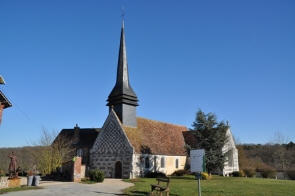

|
Les 17 Communes
du Canton de
Beaumesnil :
Le Noyer en
Ouche
Gouttières
Beaumesnil
Thevray
Ajou
Saint
Aubin des Hayes
Sainte
Marguerite en Ouche
Les Jonquerets
de Livet
Saint
Aubin le Guichard
Grandchain - Granchain
La Barre
en Ouche
Bosc-Renoult
en Ouche
Epinay
Landepéreuse
Gisay la
Coudre
La Roussière
Saint
Pierre du Mesnil
Retour
Le Canton de
Beaumesnil
Présentation : cliquez...
|
Gouttières :
Alt 129 à 168 m - Les Gouttiérois.
Superficie : 514 Ha - 197 Habitants
(déc 2015)
soit 38 Habitants par km² ou 2,85 Ha par Habitant
La commune ayant la plus petite superficie du canton.
|
Mairie :
Tél
02.32.44.41.66 Fax 02 32 46 45 24
Secrétaire : Sophie VAN HOLLEBEKE
Secrétariat
ouvert le Lundi de 15h30 à 17h30
Email :
gouttieres@meo27.fr
Maire délégué : François DORGERE Tel : 02.32.44.41.09
Port :
06.11.94.37.79
- E-mail :
Conseillers :
Mme KERRIOU-CAILLE Patricia
conseillère municipale – conseillère communale de Gouttières
M. MICHEL John
conseiller municipal – conseiller communal de Gouttières
|
Tennis Club de la Forêt :
Président Benoist TROTIN : 06.22.11.86.59
https://www.mesnil-en-ouche.fr/bouger-et-se-cultiver/activites-sportives/terrain-de-tennis/
|
Mise à l'Honneur
des Communes du
Canton de Beaumesnil à l'Office de Tourisme
Les communes du Canton de Beaumesnil ont commencé à s'exposer
à partir de 2010 à l'Office
de Tourisme.
Ainsi, elles nous feront mieux connaître leur histoire,
mais aussi leur vie
actuelle
au travers de leurs habitants, associations, artisans, agriculteurs, etc...
Gouttières : du 26 février au 18 mars 2011
Exposition visible à l'Office de Tourisme du Canton de Beaumesnil
du Mercredi au Lundi, de 9h00 à 12h30, et de 14h00 à 18h00.
http://tourismebeaumesnil27.free.fr
Maison du Pays
d'Ouche - 32 Rue du Château
Tel : 02.32.46.45.68 Fax : 02.32.45.10.05
Email :
tourismebeaumesnil27@free.fr
27410 BEAUMESNIL
les
autres dates :
Mise à l'Honneur
des Communes du
Canton de Beaumesnil à l'Office de Tourisme
|
Actualités :
A Gouttières : Un rendez-vous annuel : Les Nuits des
étoiles : Sixième édition le vendredi 4 et samedi 5 Août 2006 à partir de 21 heures à l'église. Au
programme : Exposition sur le thème : La vie sur terre vient-elle d'ailleurs ?
Vers 23 h, les planètes, la voie lactée, les constellations, les amas
d'étoiles, les étoiles filantes et les satellites artificiels se livreront aux
observateurs avec pour guide Michel Paulin qui emporte ses visiteurs dans les
merveilles du cosmos...
Pour connaître les dates et horaires de toutes les manifestations :
www.cielespace.fr
La voûte lambrissée a été restaurée en 2004 : voir
Église Notre-Dame
Inauguration de l'Église Notre-Dame de Gouttières le 2 Avril 2005 à 17 heures
(voir plus bas).
Histoire :
Doyenné d'Ouche. Patronage : l'abbé de Lyre par don de Guillaume Fitz-Osbern.
L'étymologie viendrait du latin Gutta, on rencontre Gutterie
(charte de fondation de Lire), Gutturia et Guteriæ en 1210, Gutières (
charte de 1218), Gulturia,
Gouvilla (charte de 1287). Gouttières est mentionné pour la première
fois en 1051 dans la charte de l'Abbaye de Lyre, protectrice de l'église Notre-Dame de Gouttières.
En 1042 Guillaume Fitz Osbern (fils d'Osbern) épouse Alix (ou
Adelise) de Tosny, fille de Roger, seigneur de Conches, et fonde avec elle
l'Abbaye de Lyre.
La construction est achevée en 1046, consacrée en 1050 et la
grande Charte est signée en 1051. C'est là que Gouttières apparaît.
Vers 1060, Guillaume Fitz Osbern ( mort en 1071, ami
d'enfance et sénéchal de Guillaume le Conquérant ), compris l'église Notre-Dame
de Gouttières dans la chartre de dotation de l'Abbaye de Lyre.
www.mondes-normands.caen.fr/france/ cultures/GB_FR/culture1_5
Quant au fief laïque de
Gouttières, il appartenait à une famille de ce nom : Simon de Gouttières
(vers 1090), Guillaume (vers1200), Jean fils de Guillaume, Thomas fils de Jean
(vers 1235).
En 1200, les seigneurs de Gouttières demandent à devenir
vassaux de l'Abbaye et non plus du seigneur de Breteuil.
Les
Du Val leur succédèrent. Après la mort de Guillaume Du Val, en 1361, Gouttières
fut partagé en deux. En 1387 les religieux fieffent leurs terres de la Trochée.
|
les d'Erneville, seigneurs de Gouttières...
Les recherches généalogiques, entre autres,
Guillaume de Tournemire,
http://gw.geneanet.org/pierfit (qu'il en soit ici remercié),
nous permettent de retrouver successivement :
? d'Erneville marié avec Judith de
Bigars
Jean 1er d'Erneville, Seigneur de Maubuisson,
de la Cour du Bosc et de Bigarre, marié en 1444 avec Marie Chrestien, Dame de
Barquet, Fille de Jean et de Jeanne d'Harcourt.
Jean d'Erneville marié en 1488 avec Julienne
Pigace
Jean d'Erneville marié en 1514 avec Marie Le
Comte
Louis d'Erneville marié en 1562 avec
Françoise Louet de la Vove
Jean d'Erneville marié en 1604 avec Françoise
d'Erneville, fille de Charles et Suzanne Saint Martin
Charles Ambroise d'Erneville, né vers 1652 et inhumé le 10 juin 1724 à
Gouttières, Capitaine d'Infanterie, était seigneur de Gouttières,
il a épousé le 21 sept 1690 Anne Le Picard et ont eu 14 enfants, dont Gaspard
Ponponne (1694-1775), Jean, Marie-Anne (née 1704), Marie Paule, Marie-Elizabeth
(née 1709), Pierre Henri (1711-1788).
Gaspard Pomponne d'Erneville
(1694-1775), seigneur de Gouttières a été Capitaine des grenadiers du régiment de Beaujolais,
Chevalier de l'ordre de Saint-Louis. Son épouse était Marie Madeleine Le Cornu
de la Boissière. Ils eurent trois filles : Catherine-Rose, Marie-Madeleine,
Marie-Françoise.
Catherine Rose d'Erneville épousa le 13 mars
1766 à Gouttières Charles Jean des Mazis - (1727-1809 - fils de
Charles et Charlotte du Boucherot). De cette union, naquit
François Robert Pomponne des Mazis, Marquis
des Mazis (1774-1858). Il épousa Anne de Vaulfleury de Malterre (1776-1855) et
donnèrent naissance à Louis (1800-1889) et Frédéric (1802-1859).
Gaspard Pomponne des Mazis fut probablement le
dernier seigneur de Gouttières en 1789.
Jean d'Erneville (Derneville),
Chevalier, né à Saint Aubin le Guichard, Seigneur de Marmorain et autres lieux,
marié le 30 septembre 1739 avec Geneviève Pecquet de Chameny,
Marie Anne d'Erneville,
Baptisée le 23 juin 1704 à Gouttières, mariée le 9 nov 1756 avec Cyprien Louis
de la Rouvraye.
Marie Elizabeth d'Erneville,
née et baptisée le 13 août 1709 à Gouttières,
Pierre Henri d'Erneville, Baptisée le 2 février 1711 à
Gouttières et décédé en 1788, marié avec Pélagie de Fleuriau
|
1882 : Robert Gouvion-Saint Cyr voit le jour le 6 juin
à Paris. Il est le fils aîné de Maurice Joseph (1856-1933) et Marie Boisseau
(1861-1943) qui donnèrent le jour à cinq enfants. Il épousa le 6 juillet 1914
Thérèse Marie De Maistre (1895-1986), fille de Rodolphe (1863-1934) et de
Marie Charlotte de Rosset de Létourville (1867-1950).
Descendant du
roi Philippe le Beau et du Maréchal d'Empire Gouvion-Saint Cyr, il
fut maire de Gouttières.
Mort le 29 avril 1950 à Nancy, il résida à Gouttières dans une maison près de
l'église. Ruiné, le marquis vend le domaine en 1934 aux grands parents d'Éliane
Frémont qui transforme en 2007 la propriété familiale en Gîte Rural. Tél :
02.32.46.47.11 ou 06.10.85.82.44
E-mail : fremont.eliane@orange.fr
Site web :
www.ledomainedegouttieres.com
Gouvion-Saint Cyr - Soldat de l'An II - Maréchal d'Empire - Réorganisateur
de l'armée : Un livre écrit par Christiane d'Ainval, petite fille de
Paul Jean François (1863-1923) de Gouvion Saint Cyr ; ce dernier : frère de
Maurice Joseph cité ci-avant.
1981 Éditions Copernic, Paris
|
 |
Église Notre-Dame
La
partie la plus ancienne (le chœur) date du
XIè siècle et fut restauré en 1575 selon une inscription. La nef a été
reconstruite au XVIè. Une chapelle est ajoutée au sud de la nef par le châtelain local, les murs sont en silex et briques en rangées et en damiers, torchis,
fenêtre flamboyante du transept.
|
La voûte lambrissée a été restaurée en 2004
à cause d'un affaissement au niveau de la voûte à la jonction entre le chœur,
la nef et la chapelle (cette voûte a déjà été restaurée au début des années
1800).
Une explication de la restauration est donnée lors des journées du patrimoine de
cette même année.
Inauguration de l'Église Notre-Dame de Gouttières le 2 Avril 2005 à 17
heures, à l'invitation de François DORGERE maire et du conseil
municipal, avec le groupe RISLE GOSPEL. |
Hameaux :
La Trochée : Jean Poullain était en 1562
seigneur de la Trochée, où les moines de Lyre possédaient une importante
exploitation agricole. Noël le Polley, sergent de la sergenterie noble d'Ouche,
lui avait succédé au début du XVIIè siècle. En 1626, il vendit le fief à Jean
d'Erneville, second fils de Louis d'Erneville, seigneur de Maubuisson,
Launay et La Cour-du-Bosc. Jean d'Erneville était capitaine des carabiniers et
gentilhomme de la chambre du Roi depuis 1619. Il est à l'origine de la branche
dite de Gouttières qui posséda la terre de la Trochée jusqu'à la fin de l'ancien
régime et il est probablement à l'origine de la construction du manoir.
Transformé au XIXè siècle en simple logis d'exploitation agricole, il devient la
propriété de la famille Gouvion-Saint-Cyr au début du XXè siècle.
La Mérité : La Ferme est exploitée dans les années
1893 - 1895 par Louis Emile DESSAUX époux de Victorine Joséphine PRIOR.
Actuellement la ferme est devenue le Haras de La Mérité.
Le Bocage
Le Hamel
|
Une tranche d'histoire de la vie des habitants du Noyer en Ouche vers les
années 1870 est racontée
dans le livre "
Claire Vallée
" écrit par
Marie-Gabrielle Piccino.
Claire Vallée a été une jeune fille qui a demeuré au Long Bois et a épousé
Théodule Fossey, sabotier dans le village de Gouttières.
La suite de Claire Vallée :
Valentine, une vie brisée de
Marie-Gabrielle Piccino
se déroule dans le village voisin de Gouttières où son père, sabotier, est
retourné...
Ce magnifique livre a été réédité sous le titre
" Les Sabots de Peine"
et connaît un franc succès, son auteur recherche un éditeur pour Claire
Vallée... |
Artisanat :
José Gonçalves - Portraitiste
Peintre et écrivain résidant à Gouttières - 27410 BEAUMESNIL
Auteur d'études sur Philippe de CHAMPAIGNE
Réalise votre portrait sur toile :
Contact : cliquez
|